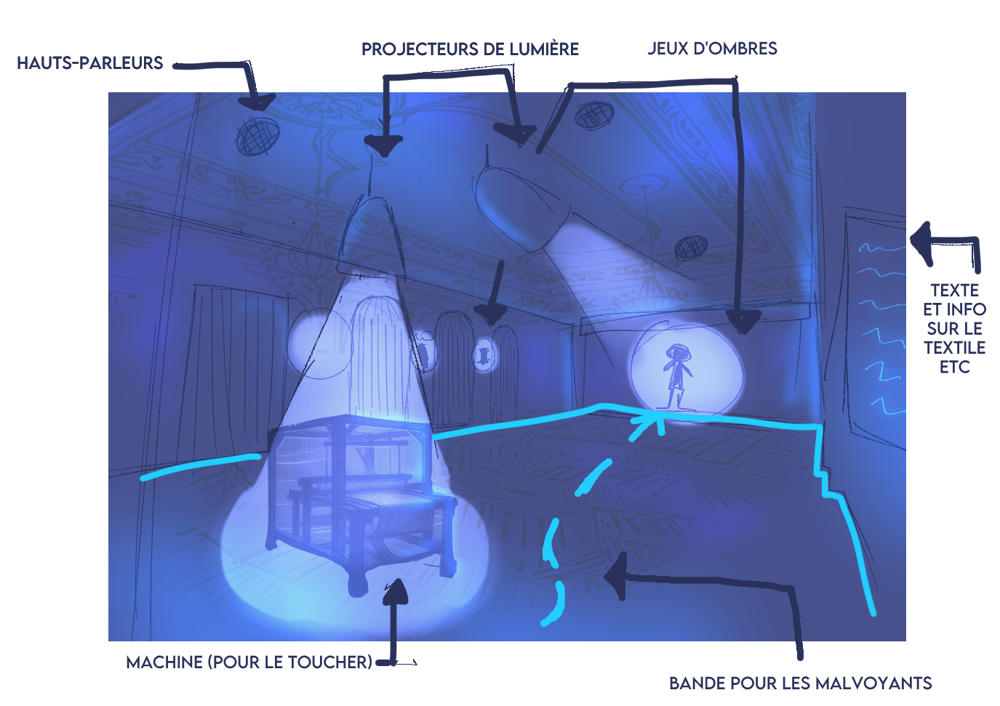
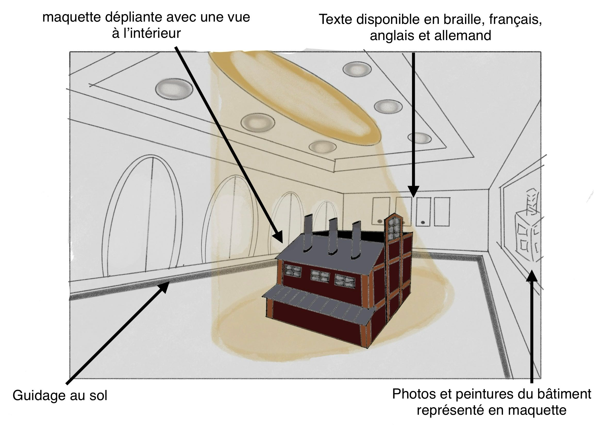
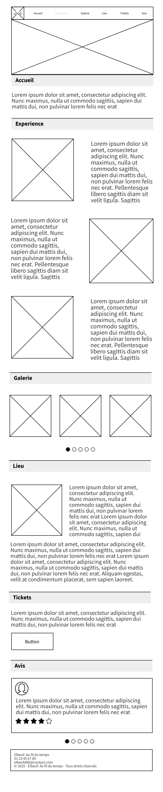

Contexte
Dans le cadre de la SAE 202 en première année de MMI, nous avons travaillé en groupe sur la conception d’un parcours immersif au sein du palais consulaire d’Elbeuf, un lieu patrimonial lié à l’histoire textile de la ville. L’objectif était de valoriser le passé industriel d’Elbeuf tout en proposant une expérience contemporaine, sensorielle et accessible à tous les publics.
Démarche
Concept
Le projet repose sur une mise en scène en deux temps :
Dispositif immersif de la partie 1:
Dispositif immersif de la partie 2
Mon rôle : direction artistique et identité graphique
J’ai été en charge de la charte graphique du projet, que j’ai voulu construir autour d’un axe fort : le contraste entre passé et présent, entre héritage et immersion.
J’ai sélectionné des couleurs évocatrices :
Côté typographie, j’ai associé ITC Avant Garde, une linéale contemporaine, à Minion Pro, une serif inspirée du XVIIe siècle, en écho à l’époque où Elbeuf devient une manufacture royale de draps.
J’ai également imaginé un univers graphique cohérent, avec des motifs liés au textile (trames, lignes en pointillés, texture de brique) et à la lumière immersive (formes de projecteurs, halos).
La charte graphique complète !Communication & interface
J’ai conçu le wireframe du site web en misant sur une navigation claire et intuitive. L’objectif était de faire comprendre le concept dès la page d’accueil, puis d’accompagner le visiteur avec des pages simples : Galerie, À propos, et Réservation.
Pour la communication, nous avons aussi réalisé une affiche immersive.

Elle met en valeur une ouvrière représentée à gauche, et son ombre projetée à droite, symbolisant le passage du geste au souvenir.
Scénographie & vidéo
J’ai également participé à la réalisation de la vidéo immersive, en contribuant à la mise en place de certaines scènes, notamment celles jouant sur les effets d’ombre et de lumière. Cette vidéo était intégrée à la scénographie dans la salle du passé.
Ce eque j'ai appris
Ce projet m’a appris à créer une charte graphique cohérente et narrative, à concevoir une interface claire à partir de wireframes, et à travailler en équipe autour d’un projet immersif mêlant scénographie, communication et identité visuelle.